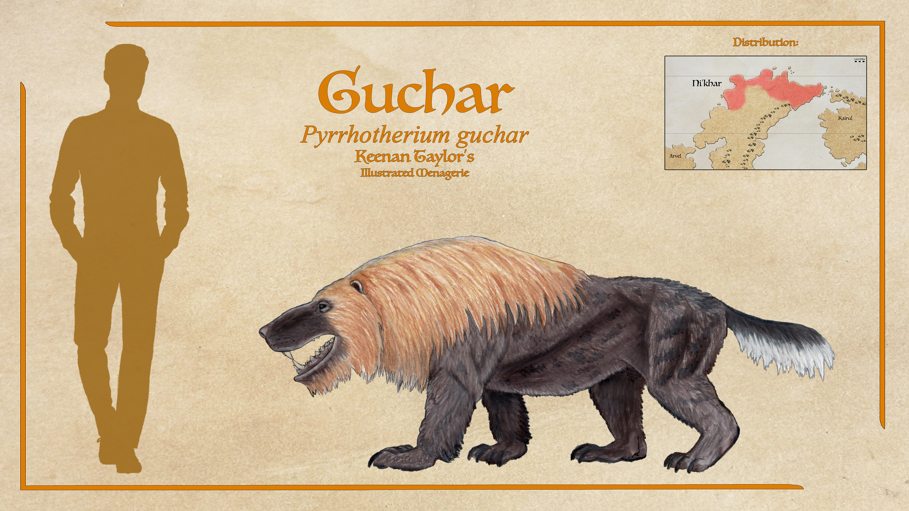
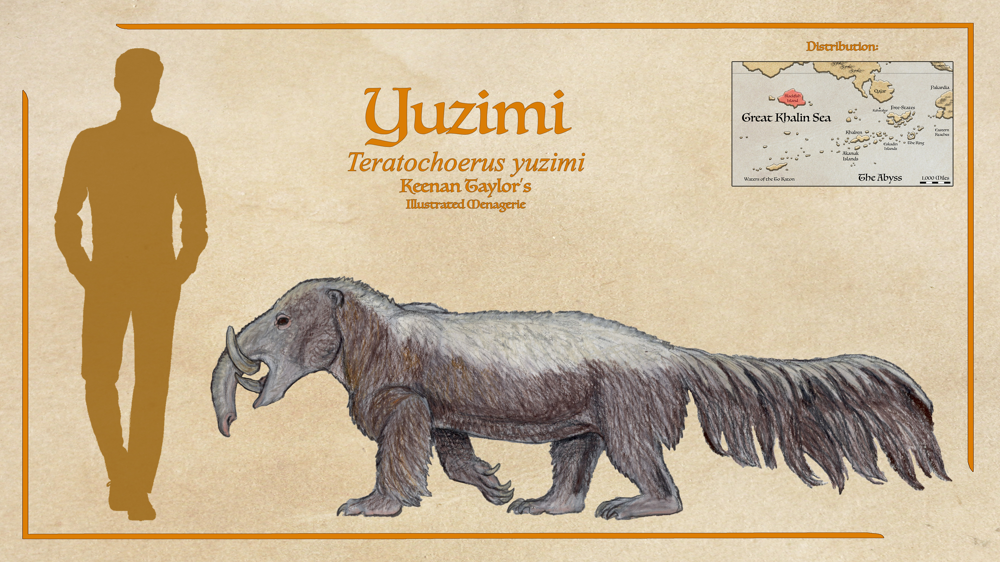
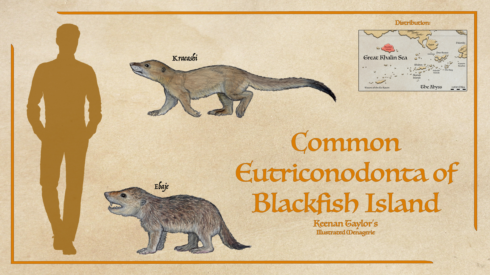
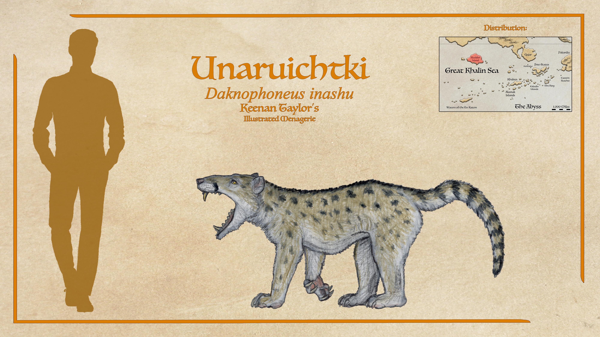
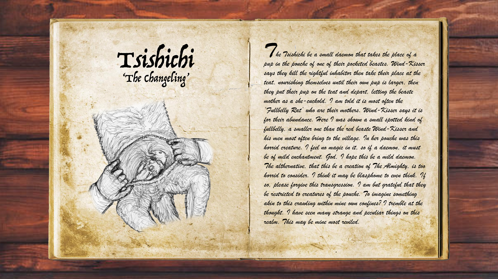

Scientific Classification
| Kingdom | Animalia | Animalia | Animalia |
|---|---|---|---|
| Phylum | Chordata | Animalia | Animalia |
| Class | Mammalia | Animalia | Animalia |
| Infraclass | Placentalia | Animalia | Animalia |
| Order | Carnivora | Animalia | Animalia |
| Suborder | Feliformia | Animalia | Animalia |
| Family | Felidae | Animalia | Animalia |
Taxonomic note: This is a simplified reference classification. The placement of individual Kaimeran lineages should be documented separately where their evolutionary relationships remain uncertain.
01 · INTRODUCTION
Overview

Felids are specialized predatory mammals characterized by powerful forelimbs, flexible bodies, keen senses, and dentition adapted for a carnivorous diet. Across their evolutionary history, members of the family have developed markedly different body sizes, hunting strategies, and habitat preferences.
The felids of Kaimere constitute a diverse assemblage inhabiting tropical forests, wetlands, temperate woodlands, open steppes, mountain environments, and offshore islands. Their evolutionary history reflects successive introductions of Earth fauna, climatic changes, local extinctions, and subsequent ecological diversification.
Several species specialize in ambush hunting within dense vegetation, while others pursue prey across open terrain. Differences in body size, locomotion, habitat preference, and prey selection permit numerous felid lineages to coexist within the same broad region.
Although Felidae provides a useful framework for organizing these animals, the placement of particular lineages should be treated cautiously where fossil evidence or other supporting information is incomplete.
02 · DEEP TIME
Evolutionary History
The history of Kaimeran felids has been shaped by repeated faunal introductions through the Portal, changes in climate, and the transformation of ecological communities. Different lineages established populations at different times, encountering both established competitors and newly available ecological opportunities.
The extinction of some indigenous predators and the arrival of additional Earth-derived mammals altered the composition of the carnivore guild. Subsequent diversification produced a fauna containing multiple hunting strategies and regionally distinctive forms.
The precise relationships among several Kaimeran felids remain incompletely resolved. Proposed relationships should be distinguished from established classifications, particularly where introductions, hybridization, or convergent anatomy complicate interpretation.
03 · SPECIES ACCOUNTS
Known Diversity
The following accounts document representative eutriconodonts recorded in the encyclopedia. Select a species to consult its individual natural history and descriptive account.
Guchar

Pyrrhotherium guchar
The guchar, a gobiconodont of northern Ni'khar, is an omnivore built like a giant badger, has one of the best senses of smell in the animal kingdom, using it to find and feast on dinosaur nests. They also have a highly powerful bite, sometimes attacking theropods many times their size and refusing to let go.
Read species article →Yuzimi

Teratochoerus yuzimi
The yuzimi that Felicity was told was a mastodon trapped in his rut is fairly confidently a gobiconodont. They are large omnivores, with a bear-like body and a trunk. Though they favor plants, fruit, and the like, they are excellent scavengers and able to bully most local predators from a kill. They are capable enough killers in their own right, despite being slow, and seem especially prone to man-eating. Unlike the swift executions by dedicated predators like unaruichtki, naqotshu, and qotsgrak, the yuzimi's kills are messy, brutal affairs that often don't even end in a kill, just horrid maiming. However, an extremely powerful bite suited to break open massive nuts and hard fruit can break bones and even skulls in a few remarkable tales. A later researcher noted at least a passing similarity between the yuzimi and the baku, a dream-eating being in Japanese legend, and the name is often used in more recent accounts after this was the name applied to the description of a specimen acquired by the Assembly in the early 1900's.
Read species article →Common Eutriconodonta of Blackfish Island

Numerous species
Eutriconodonts are a clade of mammals that is not found in the known world proper, but a few small mustelid-like members are known from regions just beyond like Khalren and other Khalin islands to the west. Their most famous members, the vice-jawed guchar of northern Ni'khar and nokutlot and other panther-possums of Kaishel, are much further beyond the known world. This group is, however, very well represented on Hyote Island. They are the most diverse predator clade, with not only small weasel, cat, and badger-like representatives.
Read Kraeashi article → Read Ebaje article →Unaruichtki

Daknophoneus inashu
Eutriconodonts are a clade of mammals that is not found in the known world proper, but a few small mustelid-like members are known from regions just beyond like Khalren and other Khalin islands to the west. Their most famous members, the vice-jawed guchar of northern Ni'khar and nokutlot and other panther-possums of Kaishel, are much further beyond the known world. This group is, however, very well represented on Hyote Island. They are the most diverse predator clade, with not only small weasel, cat, and badger-like representatives.
Read species article →Tsishichi

Unknown
A creature that Felicity appears to have been especially disturbed by was the tsishichi: a demon that procreated by replacing the joey of an abe or another pouched animal like an inashu or yuzimi with itself, then its own joey once it got larger. An example of this was shown to her: an inashu killed by a hunter had a little tsishichi still in her pouch, and the tsishichi had its own joey in its pouch waiting to trade places. From her sketch, the tsishichi appears to be another eutriconodont. A very small kind. She didn't know if this was a natural parasite or a demon, and the Assembly has no specimens to verify, but this would be a frightening and unprecedented example of a pouch parasite.
Read species article →Haraod
Scientific placement to be confirmed
A reclusive highland predator associated with the Arvelith Highlands.
Read species article →04 · CLASSIFICATION
Taxonomic Notes
This section records uncertainties, disputed relationships, and proposed revisions to the family's classification. Confirmed taxa should be distinguished from tentative identifications and provisional placements.
Where an animal's appearance suggests membership in Felidae but its ancestry has not been established, resemblance alone should not be treated as sufficient evidence of taxonomic inclusion.